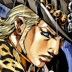

Informações Pessoais
- Nome Completo:
- Mountain Tim
- Idade:
- 45 anos
- Ano de Nascimento:
- 1836
Imagem

Personalidade
Mountain Tim é calmo, confiável e de espírito justo. Sua maturidade e experiência o distinguem de outros competidores mais jovens. Possui um forte código ético e senso de responsabilidade. É respeitoso com seus competidores, apesar da competição brutal.
Sua sabedoria vem de anos de vida nas terras selvagens. É um homem que vive de acordo com seus princípios, sem compromissos éticos. Sua presença inspire confiança e respeito em quem o conhece.
Backstory (Sem Spoilers)
Mountain Tim é um cowboy experiente conhecido por sua habilidade com o laço e seu conhecimento profundo das trilhas do oeste americano. Ele participa da Steel Ball Run com objetivos pessoais e uma determinação quieta.
Sua participação representa uma perspectiva diferente da competição - não apenas sobre vitória, mas sobre honra e justiça. Sua interação com outros personagens frequentemente os força a confrontar seus próprios princípios e objetivos.
Características Notáveis
- Habilidade exceptional com o laço
- Conhecimento profundo de trilhas e natureza
- Calma e serenidade inabalável
- Forte código moral e ético
- Sabedoria acumulada pela experiência